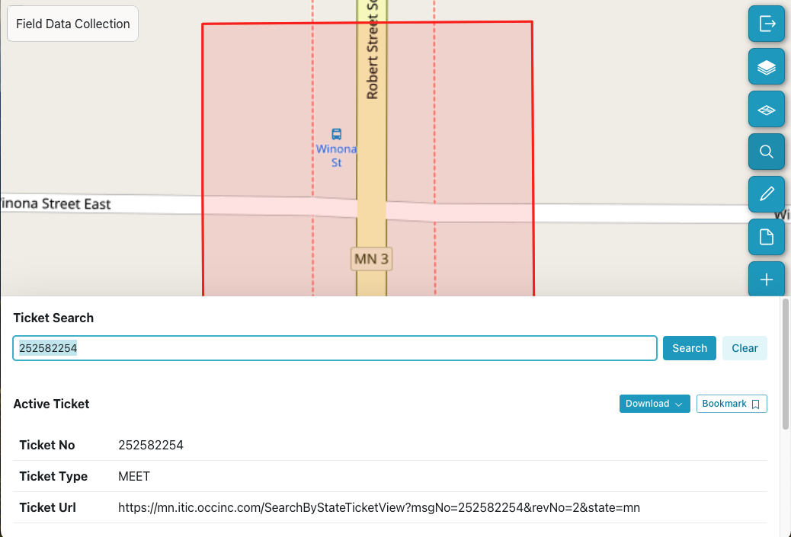
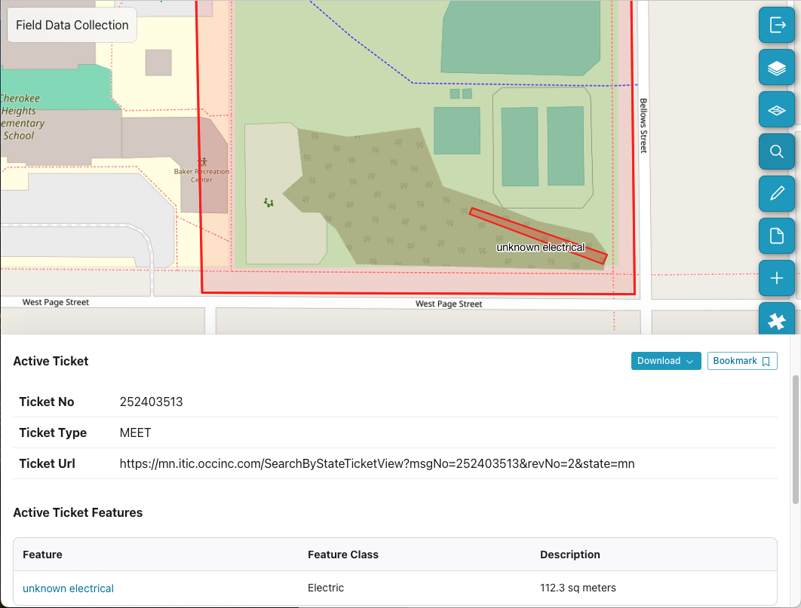
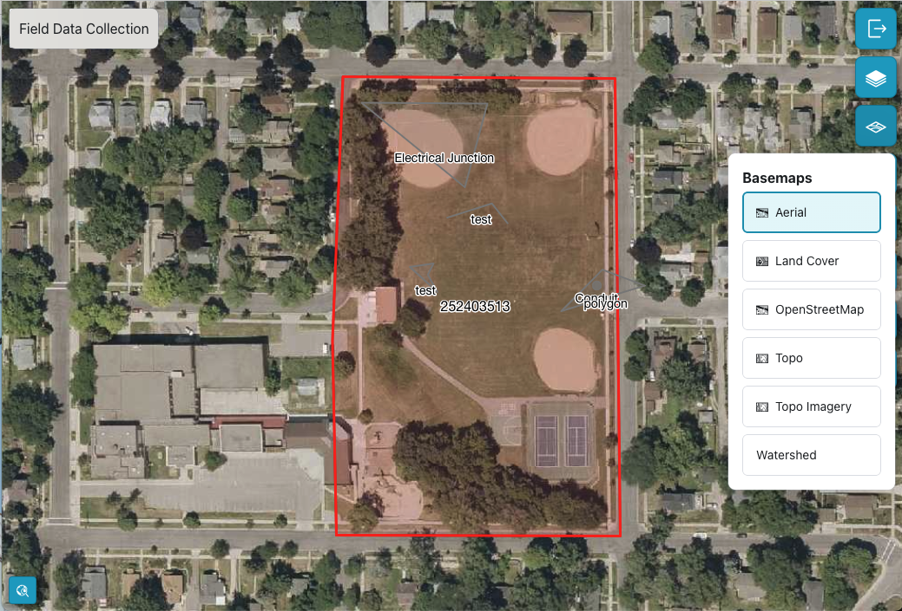
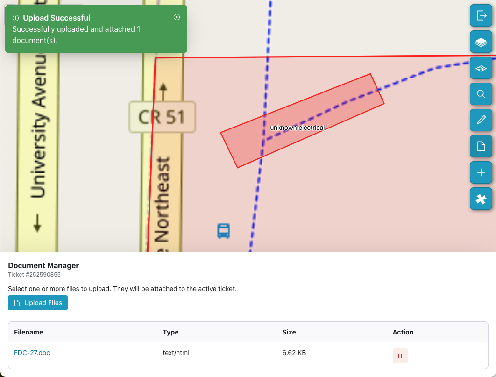
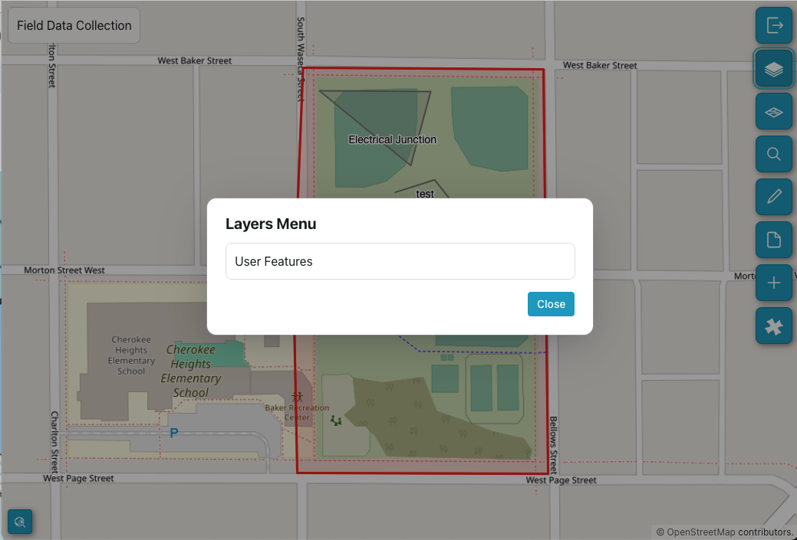

FDC Toolset
Search
To get started, use Search to open an existing 811 Ticket by entering the ticket number. Once you open your ticket the two inactive tools - Add/Edit Features and Manage documents tools - are enabled. Information about the ticket is displayed:
Ticket number
Ticket Type
Ticket URL

Active 811 Ticket
Bookmarks
You can add a bookmark to this ticket by clicking the Bookmark option. This adds it to your My Tickets list where you can save tickets and features for easy access. You can remove the bookmark by clicking the bookmark icon to the right of the ticket or feature.

Bookmarked Ticket
Basemaps
By default your ticket opens up in the OpenStreetMap basemap. Use the Basemap icon to select from the list of available map styles.

Basemap options
Zoom to location
If you are on location at the dig site, click the Location map icon in the bottom left of the screen. This will zoom into the ticket boundaries for a close up look at the features. You can also zoom in or out by using the CTRL and holding down the mouse button to select the specific zoom that works for your ticket.
Caution
When using FDC from an office, be aware that the location detected may not be your actual location, but the location of elements of your IT infrastrucucture. One option to avoid confusion is to turn off location in Settings.
Add/Edit Features
To add a new or edit an existing feature for this ticket, select the Add/Edit Features or pencil icon from the toolset. FDC automatically captures your location, but you can toggle Hide Current Location if you are not at the dig site. Define the information needed to capture a new feature:
Geometry Type you want to add: a point, a polygon, or a line.
Choose the appropriate Feature Class such as Reference, Electrical, etc.
A Label that will identify this feature in the future.
Notes to describe the feature you are adding.
Draw Feature
Once you click the Draw Feature button you are in the drawing mode. Click on the map at the site of the feature.
For a point, click again to create the point.
For a line, click once, then drag to the end of the line and click again.
For a polygon, click at each change in direction and then double click to close the polygon.
To edit the feature you created, double click on it. It will turn yellow, then you can select and drag lines or points or corners of the polygon.
You can Clear the drawing to start over, or if finished, select Save Feature.

Save Feature
Document Manager
You can collect photos, video, and other document types and associate them with your active ticket. Click Upload Files to select one or more documents. All attached documents will be displayed in the Document Manager. You can add as many documents as you need or delete older unneeded files.

Document Manager
Layers
You can turn off one or more layers to focus on a particular type of feature.

Layers
Caution
The FDC application is designed to supplement your 811 ticket. Not all utility information has been shared and some features in your ticket boundary may not be shown.
Last Updated: Sep 30, 2025